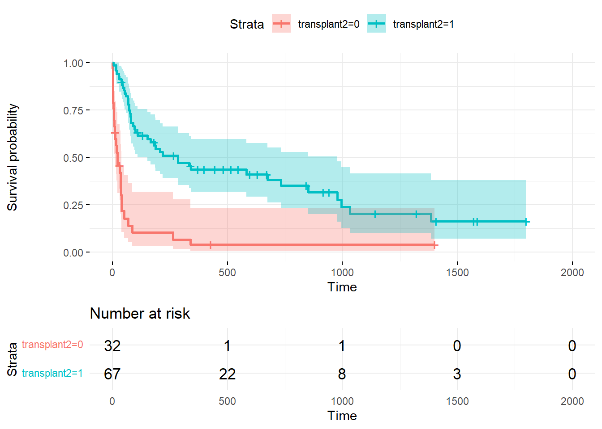

#load neaded libraries
library(survival)
#install.packages("survminer")
library(survminer)
#import dataset
heart_transplant <- read.csv("./heart_transplant.csv")Heart_transplant_coxph_v2
Load libraries and data set, examine and transform data as needed.
Load the needed libraries (survivival, survminer) and import the heart transplant dataset
Examine the data
#examine dataset
str(heart_transplant)'data.frame': 99 obs. of 8 variables:
$ id : int 15 43 61 75 6 42 54 38 85 2 ...
$ acceptyear: int 68 70 71 72 68 70 71 70 73 68 ...
$ age : int 53 43 52 52 54 36 47 41 47 51 ...
$ survived : chr "dead" "dead" "dead" "dead" ...
$ survtime : int 1 2 2 2 3 3 3 5 5 6 ...
$ prior : chr "no" "no" "no" "no" ...
$ transplant: chr "control" "control" "control" "control" ...
$ wait : int NA NA NA NA NA NA NA 5 NA NA ...summary(heart_transplant) id acceptyear age survived
Min. : 1.00 Min. :67.00 Min. : 8.0 Length:99
1st Qu.: 26.50 1st Qu.:69.00 1st Qu.:40.5 Class :character
Median : 51.00 Median :71.00 Median :47.0 Mode :character
Mean : 52.26 Mean :70.64 Mean :44.6
3rd Qu.: 78.50 3rd Qu.:72.00 3rd Qu.:52.0
Max. :103.00 Max. :74.00 Max. :64.0
survtime prior transplant wait
Min. : 1.0 Length:99 Length:99 Min. : 1
1st Qu.: 31.5 Class :character Class :character 1st Qu.: 9
Median : 85.0 Mode :character Mode :character Median : 26
Mean : 316.4 Mean : 39
3rd Qu.: 436.0 3rd Qu.: 46
Max. :1799.0 Max. :310
NA's :32 For the variables of survived (whether the patient is still alive at end of study), prior (whether the patient has had a prior surgery), and transplant (whether the patient received a heart transplant or did not) generate numeric values from the character values.
#generate numeric columns for survived, prior, and transplant from existing charachter columns
heart_transplant$survived2 <- as.numeric(ifelse(heart_transplant$survived=="dead",1,0))
heart_transplant$prior2 <- as.numeric(ifelse(heart_transplant$prior=="yes",1,0))
heart_transplant$transplant2 <- as.numeric(ifelse(heart_transplant$transplant=="treatment",1,0))
#attach dataset so can reference variables by name
attach(heart_transplant)Examine variables
Age: age of the patient at the beginning of the study
Acceptyear: year of acceptance as a heart transplant candidate
Survtime: number of days patients were alive after the date they were determined to be a candidate for a heart transplant until the termination of the study
Wait: waiting time for transplant
Survived2: survival status with levels of 0-dead and 1-alive
Prior2: whether or not the patient has had prior surgery with levels of 0-no and 1-yes
Transplant2: transplant status with levels of 0-control-did not receive transplant and 1-treatment-did receive transplant
#examine variables more
par(mfrow=c(2,2))
hist(age, xlab="Age (years)")
hist(acceptyear, xlab="Year 19XX")
hist(survtime, xlab="Survivial time (days)")
hist(wait, xlab="Waittime for transplant (days)")
hist(survived2, xlab="Survival Status (0-dead 1-alive)")
hist(prior2, xlab="Prior Surgery (0-no 1-yes)")
hist(transplant2, xlab="Transplant Status (0-control-no 1-transplant)")
par(mfrow=c(1,1))Generate Cox proporitonal hazards model(s).
Set the Wait (waiting time for transplant) variable aside for now, as it is only valid for those who received the transplant not those in the control group. Generate and examine a Cox proportional hazards model using coxph
#generate model without wait time
#wait time is only available for those who received transplant not the control group
all.mod <- coxph(Surv(survtime, survived2)~ acceptyear + age + prior2 + transplant2)
#examine model
summary(all.mod)Call:
coxph(formula = Surv(survtime, survived2) ~ acceptyear + age +
prior2 + transplant2)
n= 99, number of events= 71
coef exp(coef) se(coef) z Pr(>|z|)
acceptyear -0.08294 0.92040 0.06647 -1.248 0.212083
age 0.05553 1.05711 0.01432 3.878 0.000105 ***
prior2 -0.63345 0.53076 0.44818 -1.413 0.157542
transplant2 -1.69836 0.18298 0.28791 -5.899 3.66e-09 ***
---
Signif. codes: 0 '***' 0.001 '**' 0.01 '*' 0.05 '.' 0.1 ' ' 1
exp(coef) exp(-coef) lower .95 upper .95
acceptyear 0.9204 1.086 0.8080 1.0485
age 1.0571 0.946 1.0278 1.0872
prior2 0.5308 1.884 0.2205 1.2776
transplant2 0.1830 5.465 0.1041 0.3217
Concordance= 0.756 (se = 0.031 )
Likelihood ratio test= 48.89 on 4 df, p=6e-10
Wald test = 49.36 on 4 df, p=5e-10
Score (logrank) test = 55.91 on 4 df, p=2e-11Generate another model, for those who do receive the transplant, to determine if Wait (waiting time for transplant) was a significant indicator of patients survival status.
#generate model with wait time to see if wait time is significant for those who do receive the transplant, only looks at records that received the transplant not the control who did not receive transplant
treated.mod <- coxph(Surv(survtime, survived2)~ acceptyear + age + prior2 + wait)
#examine model
summary(treated.mod)Call:
coxph(formula = Surv(survtime, survived2) ~ acceptyear + age +
prior2 + wait)
n= 67, number of events= 43
(32 observations deleted due to missingness)
coef exp(coef) se(coef) z Pr(>|z|)
acceptyear 0.005578 1.005594 0.095776 0.058 0.9536
age 0.050544 1.051843 0.021308 2.372 0.0177 *
prior2 -0.751733 0.471549 0.453454 -1.658 0.0974 .
wait -0.008337 0.991697 0.005109 -1.632 0.1027
---
Signif. codes: 0 '***' 0.001 '**' 0.01 '*' 0.05 '.' 0.1 ' ' 1
exp(coef) exp(-coef) lower .95 upper .95
acceptyear 1.0056 0.9944 0.8335 1.213
age 1.0518 0.9507 1.0088 1.097
prior2 0.4715 2.1207 0.1939 1.147
wait 0.9917 1.0084 0.9818 1.002
Concordance= 0.685 (se = 0.043 )
Likelihood ratio test= 14.23 on 4 df, p=0.007
Wald test = 12.64 on 4 df, p=0.01
Score (logrank) test = 13.19 on 4 df, p=0.01Returning to looking at the all the patients in the study, accepted year does not appear to contribute significantly to the models. A model without that variable was generated.
#generate model without accepted year to compare and determine if removing the accepted year variable has any significant affect on the model
all2.mod <- coxph(Surv(survtime, survived2)~ age + prior2 + transplant2)
summary(all2.mod)Call:
coxph(formula = Surv(survtime, survived2) ~ age + prior2 + transplant2)
n= 99, number of events= 71
coef exp(coef) se(coef) z Pr(>|z|)
age 0.05647 1.05810 0.01457 3.875 0.000107 ***
prior2 -0.70778 0.49274 0.44368 -1.595 0.110655
transplant2 -1.72587 0.17802 0.28398 -6.077 1.22e-09 ***
---
Signif. codes: 0 '***' 0.001 '**' 0.01 '*' 0.05 '.' 0.1 ' ' 1
exp(coef) exp(-coef) lower .95 upper .95
age 1.0581 0.9451 1.0283 1.0888
prior2 0.4927 2.0295 0.2065 1.1756
transplant2 0.1780 5.6174 0.1020 0.3106
Concordance= 0.746 (se = 0.031 )
Likelihood ratio test= 47.31 on 3 df, p=3e-10
Wald test = 48.37 on 3 df, p=2e-10
Score (logrank) test = 55.28 on 3 df, p=6e-12Models with and without the variable for Accepted Year were compared
A high p value here indicates there is not a statistically significant difference between the two models. Thus the variable acceptedyear can be dropped from the model without significantly affecting it.
anova(all.mod, all2.mod, test="LRT")Analysis of Deviance Table
Cox model: response is Surv(survtime, survived2)
Model 1: ~ acceptyear + age + prior2 + transplant2
Model 2: ~ age + prior2 + transplant2
loglik Chisq Df Pr(>|Chi|)
1 -255.49
2 -256.28 1.5784 1 0.209Check data meets Cox proportional hazards model assumptions.
Check linearity assumption is met by examining a plot of the Martingale residuals.
The relationship between the x variables and the log hazard should be linear. Similar to checking for linearity in other models, a residual plot is examined. A smooth line is added to the graph to aid in assessing how well the points center around zero.
plot(predict(all2.mod), residuals(all2.mod, type="martingale"), xlab = "Predicted Values", ylab = "Martingale Residuals", main = "All2 Residual Plot",las=1)
lines(smooth.spline(predict(all2.mod), residuals(all2.mod, type = "martingale")),col="red")Check proportional hazards assumption.
Use the Schoenfield test. (cox.zph) H0 = hazards are proportional. A high p value (>0.05) here and we fail to reject the null hypothesis. A table shows the test results for each variable and the overall model.
The test can also be plotted. If the hazard ratio changes over time (is not proportional) what would its change look like. That is what the plot shows. To confirm hazards are proportional one wants to see that Beta=0 falls within the confidence interval. Three plots show how each variable fairs at meeting the proportional hazards assumption. Looking at the plot for Transplant2, the line for Beta=0 almost never falls in the confidence interval. This indicates Tranplant2 does not meet the proportional hazard assumption. This is consistent with the p value <0.05 that is see in the table.
cox.zph(all2.mod) chisq df p
age 3.03 1 0.0819
prior2 4.46 1 0.0348
transplant2 7.40 1 0.0065
GLOBAL 10.32 3 0.0160par(mfrow=c(1,3))
plot(cox.zph(all2.mod)[1])
abline(h=0, col=2)
plot(cox.zph(all2.mod)[2])
abline(h=0, col=2)
plot(cox.zph(all2.mod)[3])
abline(h=0, col=2)par(mfrow=c(1,1))Transplant status does not meet the proportional hazard assumption. Thus a Cox proportional hazards model, as we previously generated, can not be used. However, we can account for this development by stratifying the variable that does not meet the proportionality assumption. A new model is generated, or rather two models are generated, one for each status of the transplant variable (0-control-did not receive transplant and 1-treatment-did receive transplant).
Generate Cox proportional hazards models stratified on transplant status.
Generate and examine transplant stratified models.
all_strTrtmnt.mod <- coxph(Surv(survtime, survived2)~ age + prior2 + strata(transplant2))
summary(all_strTrtmnt.mod)Call:
coxph(formula = Surv(survtime, survived2) ~ age + prior2 + strata(transplant2))
n= 99, number of events= 71
coef exp(coef) se(coef) z Pr(>|z|)
age 0.04662 1.04773 0.01434 3.250 0.00115 **
prior2 -0.78988 0.45390 0.44480 -1.776 0.07576 .
---
Signif. codes: 0 '***' 0.001 '**' 0.01 '*' 0.05 '.' 0.1 ' ' 1
exp(coef) exp(-coef) lower .95 upper .95
age 1.0477 0.9544 1.0187 1.078
prior2 0.4539 2.2031 0.1898 1.085
Concordance= 0.642 (se = 0.038 )
Likelihood ratio test= 15.95 on 2 df, p=3e-04
Wald test = 13.96 on 2 df, p=9e-04
Score (logrank) test = 14.36 on 2 df, p=8e-04Check assumptions again for the latest model: linearity assumption and proportional hazards assumption.
plot(predict(all_strTrtmnt.mod), residuals(all_strTrtmnt.mod, type="martingale"), xlab = "Fitted Values", ylab = "martingale Residuals", main = "All Stratified Transplant, Residual Plot",las=1)
abline(h=0)
lines(smooth.spline(predict(all2.mod), residuals(all2.mod, type = "martingale")),col="red")cox.zph(all_strTrtmnt.mod) chisq df p
age 0.331 1 0.565
prior2 3.410 1 0.065
GLOBAL 3.771 2 0.152plot(cox.zph(all_strTrtmnt.mod)[1])
abline(h=0, col=2)plot(cox.zph(all_strTrtmnt.mod)[2])
abline(h=0, col=2)Estimate survival curves.
The advantage of the Cox PHM is that we do not need to know the baseline hazard. Not knowing the baseline hazard means we can not say the hazard for the studied group. We can only give the ratio of those two. Without the baseline hazard and the hazard of the studied group, survival curves can not be calculated. However using mean values of variables a survival curve can be estimated using ggsurvplot.
ggsurvplot(survfit(all_strTrtmnt.mod), data=heart_transplant, ggtheme = theme_minimal(), conf.int=TRUE, risk.table=TRUE, tables.height = 0.3, tables.theme = theme_minimal())
Additional analysis.
Age has a strong effect in this model. For further analysis, age was categorized into <40, 40-49, 50+. A model was generated for this age categorized variable.
heart_transplant$age2 <- as.numeric(ifelse(heart_transplant$age<41,0,ifelse(heart_transplant$age<51,1,2)))
detach(heart_transplant)
attach(heart_transplant)The following object is masked from package:survival:
transplanthist(age2, xlab="Age (<40, 40-49, 50+)")
#generate model with chategorized age
all_agechat.mod <- coxph(Surv(survtime, survived2)~ age2 + prior2 + strata(transplant2))
summary(all_agechat.mod)Call:
coxph(formula = Surv(survtime, survived2) ~ age2 + prior2 + strata(transplant2))
n= 99, number of events= 71
coef exp(coef) se(coef) z Pr(>|z|)
age2 0.7337 2.0828 0.1808 4.059 4.93e-05 ***
prior2 -0.7177 0.4879 0.4451 -1.613 0.107
---
Signif. codes: 0 '***' 0.001 '**' 0.01 '*' 0.05 '.' 0.1 ' ' 1
exp(coef) exp(-coef) lower .95 upper .95
age2 2.0828 0.4801 1.4614 2.968
prior2 0.4879 2.0497 0.2039 1.167
Concordance= 0.634 (se = 0.041 )
Likelihood ratio test= 20.9 on 2 df, p=3e-05
Wald test = 20.01 on 2 df, p=5e-05
Score (logrank) test = 21.14 on 2 df, p=3e-05detach(heart_transplant)